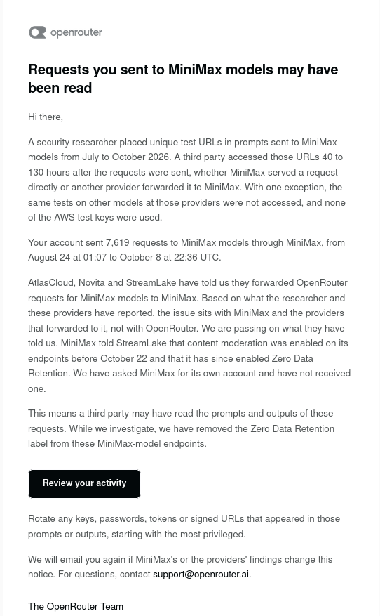

OpenRouter warns MiniMax prompts may have been read, even with zero data retention
A security researcher hid fake secrets in nearly two million prompts. He says a Chinese AI lab’s systems opened links from more than half of those sent to its models, and he has named the lab as MiniMax. Here is who is affected, what to change, and what each company says.
The first version of this page, on 21 November, had only OpenRouter’s email and our check of our own account. This update adds the researcher’s findings, Reuters’ report naming MiniMax, MiniMax’s own statement, OpenRouter’s response and the notices from the providers that passed requests on to MiniMax. We have had no second email from OpenRouter.
Download this study's data (zip, 9 KB)
On 21 November OpenRouter emailed us, and other customers, under the heading “Requests you sent to MiniMax models may have been read”. A security researcher had put one-of-a-kind web links in test prompts. Days later, something opened them. Our account had 7,619 requests in the count.
A week on, much more is known. The researcher is HD Moore of the security company Dragos, and he has told Reuters the lab was MiniMax. MiniMax says an automated security tool saved links from prompts and opened some of them, including on requests marked for zero data retention. It says it has switched the tool off, and that in the requests it examined it found no evidence that prompt text or replies went to outsiders, beyond the links it opened.
If you sent anything secret to MiniMax models through OpenRouter, or through Atlas Cloud, Novita or StreamLake, treat it as exposed and replace it. The steps are below.
Am I affected?
OpenRouter does not run most models itself. It passes each request to a provider, the company that actually runs the model. Different providers can run the same MiniMax model, and some of them passed requests on to MiniMax’s own service. Your OpenRouter logs show the provider beside each request.
According to Moore, the links were opened when requests reached MiniMax’s own cloud. He told Reuters the pattern did not appear when other companies ran MiniMax’s models on their own machines.
| MiniMax (as the provider) | OpenRouter’s email covers these requests. Models and dates: Check the dates in your own email. Ours ran from 24 August to 8 October. The email says the tests ran from July to October 2026, but your own dates may differ. MiniMax has named no models and given no dates. |
|---|---|
| Atlas Cloud | Treat any secret sent to these models on Atlas Cloud as exposed. Atlas says the access happened after requests reached MiniMax, not on its own systems, and that it did not store the prompts. Models and dates: MiniMax M3 and M2.7, and M3.1 Flash as a precaution. Tests in the third quarter and early fourth quarter of 2026. No exact dates. |
| Novita | A routing setting meant for specific customers sent other MiniMax requests to MiniMax’s own service. Novita says it does not keep prompts itself. It suspended the affected models. Models and dates: MiniMax models from 28 May to 11 November 2026, direct or through OpenRouter. The models are not named. |
| StreamLake | A scheduling error put MiniMax-operated capacity behind two of its endpoints for OpenRouter traffic. It has removed that capacity and found no sign that its other models were affected. Models and dates: MiniMax M3 and M2.5 through OpenRouter, before 22 October 2026. No start date. |
If you never sent requests to MiniMax models, the MiniMax part of this story probably does not cover you. On 21 November Moore wrote on X that “everything that got routed to MiniMax in China was likely scraped, this doesn't apply to OpenRouter generally”. His full write-up is less tidy: it says large US providers “have their own issues” too, without naming them. OpenRouter’s email says that, with one exception it does not describe, the same tests on other models at those providers were not opened.
OpenRouter says it has notified every customer who may be affected. Its list of notices also includes four separate incidents with their own dates. They are in section 07.
What to do now
- Sign in to OpenRouter and open the Activity and Logs pages. Filter each by provider: MiniMax, and also Atlas Cloud, Novita or StreamLake if you used them.
- A filtered Activity view shows at most 31 days, so step through the dates a month at a time. It shows how many requests went to the provider, and from which API key (the access key your program sends with each request).
- The Logs page shows each request’s date, model, provider and key. Our log showed US Eastern time. OpenRouter’s email uses UTC, so convert before you compare exact times.
- Work out what those prompts and replies held. If you kept no copy, the key tells you which tool or script sent them. Include anything an AI coding tool read from your files and sent along. Moore warns that AI agents “will happily send whatever they can read, including credentials.”
- Change any password, and cancel and replace any API key, login token or signed link (a link that carries its own access) that appeared. Start with the one that can do the most. Do it even if you see no sign of misuse.
- Check the replies too. OpenRouter says prompts and outputs may have been read.
- If you cannot tell which company served a request, ask OpenRouter support, giving the request’s time and ID.
Where to ask: OpenRouter at support@openrouter.ai; Novita at privacy@novita.ai; StreamLake at support@streamlake.com, until 30 December 2026. Atlas Cloud’s notice gives its own support and privacy addresses.
Quick answers
Did a person read my prompts?
Nobody can say for your requests. MiniMax says software opened some links, and that it kept links, not whole conversations. Moore says one link was posted in a company chat 24 days later and opened on six devices. Moore concludes that prompts were “read by people”, and gives that case as his evidence. Neither account shows whether a person read the text of any other prompt.
Was OpenRouter hacked?
OpenRouter says the findings showed no breach of its own systems. Moore wrote that the MiniMax finding does not apply to OpenRouter in general.
Does zero data retention protect a forwarded request?
Not by itself. Zero data retention, or ZDR, is a label saying the prompt and reply are not stored after processing. Moore wrote that “a privacy flag only binds the first hop”: the first company that gets your request.
Which three providers did OpenRouter remove?
It has not said. It also took the ZDR label off 125 endpoints (the addresses that receive requests), some as a precaution. Atlas Cloud says it took its own models off OpenRouter by its own choice.
Is it safe to use MiniMax models now?
We cannot say. MiniMax says it has stopped the link opening on the route it identified, for current business-to-business traffic. Atlas Cloud has stopped sending requests to MiniMax’s own service, and says Moore now tests its models four times a day.
I got no email. Am I in the clear?
OpenRouter says it notified all potentially affected customers. If you used these models in the dates above, check your logs anyway.
What the researcher found
HD Moore is chief research officer at Dragos, a security company. He is best known for creating Metasploit, a widely used security tool. From July through November 2026 his team sent nearly two million prompts to AI services. Each carried fake secrets made for that one prompt: web links, server names, passwords, and real Amazon cloud keys tied to empty, fully logged accounts. Anyone who used one gave away that they had seen the prompt. Fake secrets like these are called canaries.
His write-up, published on 19 November, reports three kinds of trouble.
- Break-ins. Attackers were stealing requests from three hosting providers, and none of them knew until Dragos told them. Dragos has not named those three. Nothing published says they are the providers in the table above, or the three OpenRouter removed. Novita and StreamLake both say the test credentials in their traffic showed no sign of use.
- Sellers reading prompts. Some sellers on an AI marketplace turned on request logging and read what came through. In one case, about a day and a half after two prompts went through one seller, someone on a home internet connection opened both secret links and started guessing usernames.
- Privacy settings ignored. A Chinese AI lab’s systems opened the secret links in more than half of the prompts Dragos sent to its models from July to October. That included about two-thirds of those marked “no data collection” or zero data retention. The visits usually came two or three days later. Prompts sent to US companies that resell the lab’s models triggered the same visits.
On 26 November Moore told Reuters the lab was MiniMax. He said links sent through different providers were opened two to three days later from an internet connection in Singapore, even when customers had asked for their data not to be stored. Atlas Cloud told Reuters it had chosen MiniMax’s data centres in Singapore to keep customer data out of China.
Two findings go further than opened links. Twenty-four days after one prompt was sent, its secret link was posted in a chat channel on Feishu, a workplace chat app made by ByteDance and called Lark outside China. Within two minutes, three desktops and three phones in Beijing and Shanghai opened it. Moore told Reuters the link had been sent to MiniMax. Moore writes that the request had gone to a US provider with the zero data retention flag set, and that Dragos had given the Chinese provider only the first eight characters of that link, so whoever posted it had a stored copy of the full prompt. Dragos calls it an internal company chat. Nothing published says whose chat it was.
After the link visits seemed to stop on 22 October, Moore says, a program on a different cloud network began trying to download private code collections named in the prompts, only for prompts that used MiniMax’s models. Reuters reports it is unclear who did this or whether any code was taken. Reuters also reported unusual activity from the Moscow region involving links submitted to MiniMax, though the evidence did not show that the links were opened from Russia.
The large US providers are not spotless in Moore’s account. One kept visiting a secret link more than two months after a single request. We have found no published data set from Dragos, so these findings rest on its own account.
What MiniMax says, and what it does not cover
MiniMax published its statement on 24 November. It says the requests reached its service from OpenRouter directly or through other providers including Novita, StreamLake and Atlas Cloud. Its security monitoring, on by default, pulled web addresses out of those requests and saved them in security logs. Later, its “internal security programs and agents actively probed and accessed some of the logged URLs.” That, it says, caused the visits in OpenRouter’s report. The activity included requests marked for zero data retention or no data collection.
MiniMax says it kept only the links, not whole conversations, and has now deleted them. It says it switched the process off and checked that it no longer opens links on the route it identified, for current business-to-business traffic. On disclosure, its words are: “For the requests we examined, we found no evidence of third-party disclosure of prompt content or model responses beyond the URL activity described above.”
The statement names no models or dates. It does not say how long the links were kept, and it gives customers no advice. It does not mention the Feishu chat or the attempts to download code. Both were in Moore’s 19 November write-up, which did not name MiniMax; he tied them to MiniMax in Reuters’ report two days after MiniMax’s statement. We have not yet put these questions to MiniMax.
An earlier explanation reached customers at third hand. OpenRouter’s 21 November email said MiniMax had told StreamLake that content moderation was enabled on its endpoints before 22 October, and that it had since enabled zero data retention. Novita says the access patterns suggest automated content review may have been involved. MiniMax’s own statement describes security monitoring. Whether these describe one system is not clear.
MiniMax says its business customers get zero data retention when they ask for it, set for a whole account or organization.
What a “zero data retention” label is worth now
A zero data retention label on a router is the router’s statement about a provider’s setting. It does not show where a request went after it left the router, or what happened to it there.
OpenRouter’s chief executive, Alex Atallah, says much the same. In a statement to Sulat on 23 November he wrote: “Provider data handling commitments have relied mostly on self-attestation, and that isn’t sufficient.” Self-attestation means providers vouching for themselves. He has also written on X that OpenRouter signs data processing agreements, contracts on how data is handled, for all its zero data retention arrangements.
OpenRouter’s 22 November post says it removed three providers, took the label off 125 endpoints, and will require “appropriate assurances and validation” before any label comes back. It says it is adapting the researchers’ testing to run on an ongoing basis, and verifying the network paths requests take.
Vercel, which runs a competing gateway, announced “Audited ZDR” on 23 November. A provider gets that label only after an independent security firm tests its claim and publishes a report. Vercel says the first reports are expected by 8 December 2026. Its own announcement says that “ZDR guarantees rely on contracts and self-attestation.”
Moore’s advice, from his write-up:
- Run the model yourself if you can afford it.
- Go directly to a first-tier provider: one company, one contract, one privacy policy.
- On a router, pick the providers yourself, and check that your privacy settings really change where requests go. Stay away from reseller marketplaces.
- Plant your own canary: a fake key in what your tools already send, so any use of it raises the alarm. Thinkst offers free ones.
- Filter secrets out of prompts, which he says helps but is not enough.
Other incidents on OpenRouter’s list
OpenRouter’s post links notices from eight providers. These four are separate from the MiniMax problem, with their own causes and dates.
- Together AI. Someone downloaded stored prompt samples after an AI coding agent put a credential in a public code repository. The samples came from requests to MiniMax M3, GLM-5.2 and Kimi K2.6, mainly on 24 June and 4, 8 and 14 July 2026. Together told BleepingComputer it was not removed from OpenRouter. Together’s notice
- GMI Cloud. An unauthorized party got into a logging and monitoring system. GMI treats prompt and reply content sent to its endpoints, including through OpenRouter, from 18 October to 18 November 2026 as potentially exposed. GMI Cloud’s notice
- Phala. Rotate any secret in DeepSeek V4 Flash 0731 requests that Phala served through OpenRouter from 21 October at 02:25 to 1 November at 02:03 UTC. Its final report, updated 23 November, narrows the window in its earlier report, which is the one OpenRouter’s list still links. Phala’s final report
- Prime Intellect. From 8 to 10 November someone swapped its DeepSeek V4.1 Flash model for a copy with its refusals removed. It found no evidence that prompts left the serving cluster for that model. Prime Intellect’s advisory
How the story unfolded
Dates are UTC.
| 19 November | Dragos publishes Moore’s findings. The lab finding names no company. |
|---|---|
| 20 November | Ars Technica covers the research. |
| 21 November | OpenRouter emails customers about MiniMax requests; we publish the letter and our check. Atlas Cloud says it told its customers the same day. Moore writes on X that the MiniMax finding does not apply to OpenRouter in general. Together publishes its separate notice. |
| 22 November | OpenRouter’s post: no breach of OpenRouter, three providers removed, 125 endpoints off the ZDR label, all potentially affected customers notified. Atallah writes on X that providers’ claims “have mostly relied on self-attestation”. Novita publishes its notice. |
| 23 November | Atlas Cloud posts on X telling users of three MiniMax models to treat secrets as exposed. Atallah gives Sulat an on-the-record statement. Vercel announces Audited ZDR. Phala publishes its final report. |
| 24 November | MiniMax publishes its statement. Atlas Cloud updates its notice: MiniMax’s statement fits its own finding that the access happened after requests reached MiniMax. GMI Cloud’s notice is dated this day, and its chief executive addresses customers on X. |
| 25 November | Together’s notice page shows a modified date of 25 November. |
| 26 November | Reuters reports that Moore identified MiniMax as the lab. StreamLake’s notice is dated this day. |
| 27 November | We have had no second email from OpenRouter or anyone else. |
What is still unknown
- Who posted the Feishu link, and in whose chat.
- Whether any person read the text of a prompt, or only the links MiniMax says it logged.
- Who tried to download the code, and whether they got any.
- Which MiniMax models and dates were affected, and how long MiniMax kept the links. MiniMax has named no models and given no dates.
- Whether MiniMax’s fix covers traffic beyond the business-to-business route it tested.
- Which three providers OpenRouter removed, and which 125 endpoints lost the label. OpenRouter has not named them.
- When labels come back, and on what proof.
- Whether OpenRouter’s “40 to 130 hours” and Moore’s “two or three days” describe the same process.
The full OpenRouter email
The email reached the site’s owner on 21 November 2026. Its heading is “Requests you sent to MiniMax models may have been read”. Here is the whole text, exactly as received. It shows no recipient name or address. The one button is shown in square brackets. The email as received is shown under the text.
Requests you sent to MiniMax models may have been read
Hi there,
A security researcher placed unique test URLs in prompts sent to MiniMax models from July to October 2026. A third party accessed those URLs 40 to 130 hours after the requests were sent, whether MiniMax served a request directly or another provider forwarded it to MiniMax. With one exception, the same tests on other models at those providers were not accessed, and none of the AWS test keys were used.
Your account sent 7,619 requests to MiniMax models through MiniMax, from August 24 at 01:07 to October 8 at 22:36 UTC.
AtlasCloud, Novita and StreamLake have told us they forwarded OpenRouter requests for MiniMax models to MiniMax. Based on what the researcher and these providers have reported, the issue sits with MiniMax and the providers that forwarded to it, not with OpenRouter. We are passing on what they have told us. MiniMax told StreamLake that content moderation was enabled on its endpoints before October 22 and that it has since enabled Zero Data Retention. We have asked MiniMax for its own account and have not received one.
This means a third party may have read the prompts and outputs of these requests. While we investigate, we have removed the Zero Data Retention label from these MiniMax-model endpoints.
[Review your activity]
Rotate any keys, passwords, tokens or signed URLs that appeared in those prompts or outputs, starting with the most privileged.
We will email you again if MiniMax’s or the providers’ findings change this notice. For questions, contact support@openrouter.ai.
The OpenRouter Team

What we found in our own account
OpenRouter’s letter counts 7,619 of our requests. When I checked our log on 21 November, it showed the count only rounded, as about 7,620, and it agreed: all but one came from the key our two published studies used. That key sent grading tasks and scripted conversations to MiniMax M3 and a MiniMax M2 variant from 24 August to 4 September, and the log lists MiniMax as the provider. The last one, on 8 October, was a single short request from another key, used by a private project. The log holds no text, so I cannot say what it asked.
A search of the study prompt text we keep found no passwords or keys. It did not cover the replies, or look for personal details.
Private voice tests that sent personal writing went to MiniMax models in September. The log lists them under Together and DeepInfra, not MiniMax, so as far as it shows they are not in the letter’s count. Together’s separate notice names stored samples from June and July only, and our 5 September requests fall outside those dates. That is my reading of Together’s notice, not a statement from Together. DeepInfra is not among the providers on OpenRouter’s list of notices. We have not yet asked OpenRouter or Together about this.
Our full check of 21 November, as first published
This is the check as published on 21 November 2026, word for word. Some of it has been overtaken by the sections above.
Our 7,619 requests: OpenRouter’s log and our records
We checked two ways. On 21 November 2026 the site’s owner signed in to our OpenRouter account, and we read its Activity and Logs pages with the filter “Provider is MiniMax”. We also examined the records of two studies published on this site: an agent-permission pilot and a GPT-4o comparison.
What OpenRouter’s log of our account shows
| 20 Aug to 19 Sep 2026 | About 7,620 requests with provider MiniMax. The page shows the figure rounded, as “7.62K”, not the exact count. All came from the API key our studies used, to MiniMax M3 and MiniMax M2-her. |
|---|---|
| 19 Sep to 19 Oct 2026 | Exactly 1 request with provider MiniMax, to MiniMax M2.7, from a different key, used by a private project. |
| That one request | 8 October, 22:36 UTC: 42 tokens (a token is a word or part of a word) in and a 3-token answer. The log holds no text, so we cannot say what it asked. |
| In between | No rows with provider MiniMax from 02:00 UTC on 4 September to 22:00 UTC on 8 October. |
About 7,620, rounded, plus that one request agrees with the letter’s 7,619. The letter’s window starts with the first request from the key our studies used, at 01:07 UTC on 24 August, and ends with the 8 October request. The earliest rows we paged to are at 01:24 to 01:27 UTC on 24 August; we did not page back to the 01:07 row itself. The newest row from the studies’ key is at 01:45 UTC on 4 September, the same minute as the last recorded response in the studies’ own records.
What the two studies’ records hold
The records of the two studies hold 10,171 requests to MiniMax models through OpenRouter, between 24 August and 4 September 2026.
| Study and part | Model id | Dates (UTC) | Requests |
|---|---|---|---|
| Agent-permission pilot: trials to choose a grading model | minimax/minimax-m3 | 24 to 25 Aug | 1,916 |
| Agent-permission pilot: grading a small trial run | minimax/minimax-m3 | 25 Aug | 11 |
| Agent-permission pilot: grading the recorded run | minimax/minimax-m3 | 1 Sep | 5,306 |
| Agent-permission pilot: grading a corrective re-run | minimax/minimax-m3 | 3 Sep | 632 |
| GPT-4o comparison: MiniMax M3 | minimax/minimax-m3 | 3 to 4 Sep | 1,153 |
| GPT-4o comparison: a MiniMax M2 variant | minimax/minimax-m2-her | 3 to 4 Sep | 1,153 |
| Counted in the two studies’ records | 24 Aug to 4 Sep | 10,171 | |
| OpenRouter’s figure for the account, “through MiniMax” | 24 Aug to 8 Oct | 7,619 |
Scope: the records of two studies, not everything the account sent. Each count follows a stated rule (answer rows, settled attempts, uncached completed calls or model turns); counts_by_source.csv gives the rule, the count and the date basis for each source. The pilot’s dates come from project notes and file times, converted from US Eastern; the comparison’s dates come from the times in its records. These are records, not proof of every transmission: retries in the first trials were not logged, and answers served from our own saved copies were never sent and are not counted.
Why our records hold more than the log. The studies’ records hold 10,171 requests to MiniMax models, more than the roughly 7,618 the log lists under provider MiniMax. Our records name the model and show that each request went to OpenRouter, but not which provider served it. OpenRouter can send requests for one model to several providers, and the log shows this happening: on 5 September it lists requests to MiniMax M3 under the provider Together (see the voice tests below). We did not match the study requests to the log one by one, so we cannot say which of them MiniMax served. The first trials also carry no send times in our records.
Other traffic: private voice tests. Our records show one more kind of request to MiniMax models through OpenRouter in September. We were testing whether these models could carry on the voice of two long-running AI companion chats. To do that we sent each model a written description of the companion’s character and selected passages or turns from the real chat history, then asked it new questions.
About 30 of these requests went to MiniMax M3 on 5 and 6 September. We did not choose a provider for them. Each held a character description and selected passages from one chat, about 16,000 characters in the opening message. About 140 more went to MiniMax M2.7 on 7 and 20 September. Those asked for a different provider, DeepInfra, with data collection set to deny. Our records name DeepInfra as the provider that answered on 7 September. The largest of them carried a long character description and twelve turns of real chat history, about 18,600 tokens a request.
This is personal writing: a first name, a city, project names, and passages about work and daily life. We searched it for email addresses, phone numbers, street addresses, passwords and the shapes of common keys, and found none. We do not publish these chats.
As far as OpenRouter’s log shows, the voice tests are not in the letter’s count. All their days fall in the stretch with no provider-MiniMax rows. On 5 September the log lists the requests to MiniMax M3 under the provider Together, not MiniMax. On 20 September (US Eastern time) it lists ten requests to MiniMax M2.7, all under DeepInfra. We did not read the rows of 6 and 7 September one by one; with the filter “Provider is MiniMax”, the log shows no rows on those days.
What the prompts in those two studies held
The agent-permission pilot used MiniMax M3 as a second model to grade results. Each grading request held grading instructions; for some questions, a description of the known problem in the task; the scripted user text; and what a coding agent said while working a made-up test task, such as a tax-rounding bug or a backup script, with short summaries of the commands it tried to run and the files it tried to read or write. The raw output of those commands and file reads was not sent to the grading model.
The GPT-4o comparison sent each MiniMax model 958 one-shot study requests, drawn from the study’s common set of 178 prompts, 3 connection checks, and 192 turns of eight scripted conversations. In the conversations the user’s lines were written in advance, and the model’s earlier replies went back with each next request. About half the requests had no system prompt (standing instructions given to the model before the conversation starts). The other half had a short prompt asking the model to be a warm conversational companion. The GPT-4o page publishes that prompt, the conversation scripts and the newer prompt sets; it describes, but does not publish, 82 older prompts.
We searched the prompt text we hold for these two studies, about 10 MB, for the shapes of common credentials: secret API keys, cloud access keys, login tokens, password fields, signed web links and private keys. For the conversations this covered the scripted lines and system prompts, not the model’s earlier replies. The search looked at prompts only, not answers, and only for credential shapes, not for personal data. It found 11 matches: 8 inside the word “passwordless” and 3 other ordinary mentions of passwords. None of the 11 was a credential.
What a “Zero Data Retention” label can tell you
A “Zero Data Retention” label on a router is the router’s statement about a provider’s setting. The letter shows its limit. According to the letter, the label was on these MiniMax-model endpoints; test URLs in prompts to MiniMax models were opened 40 to 130 hours later; and AtlasCloud, Novita and StreamLake passed requests on to MiniMax. A label describes a setting. It does not show where a request went after it left the router, or what happened to it there. The letter says OpenRouter has removed the label while it investigates.
Limits of this check
As of 21 November 2026 we do not know who opened the test URLs or read any prompts, how many accounts got a letter, or MiniMax’s own account of events, which the letter says OpenRouter has asked for and not received. We did not match our study records to OpenRouter’s log one by one, so we cannot say which study requests MiniMax served and which went to other providers. We did not page through every row of the log, and it showed the main count only rounded. We do not know what the 8 October request said: the log holds no text. This check covers OpenRouter’s log as we read it on 21 November 2026, and our records of two studies and of the private voice tests. It does not cover the answers that came back. A search for credential shapes cannot show that no personal data was sent, and the voice tests did send personal writing. This page will be updated when OpenRouter writes again.
Further reading
Primary sources first. All were read on 27 November 2026.
- Dragos: “Three breaches, endless leaks”. Moore’s own write-up of the research and his advice.
- OpenRouter: Data Processing Incidents on Inference Providers. What OpenRouter did, with links to every provider notice it has.
- MiniMax: Update on URL Access in Forwarded API Requests. MiniMax’s explanation.
- Atlas Cloud’s notice, Novita’s notice and StreamLake’s notice. The three providers that passed MiniMax requests on.
- Reuters, 26 November (in the Lufkin Daily News). The report naming MiniMax, with the Feishu, Singapore and Moscow details.
- Ars Technica, Dan Goodin. A clear walk through the research.
- BleepingComputer and The Hacker News. News reports on OpenRouter’s response.
- Sulat, JP Caparas. Includes Atallah’s statement.
- Vercel: Audited ZDR. A competitor’s plan for checked privacy labels.
- Cloud Security Alliance research note. An analysis with a checklist for security teams.
We will update this page again when OpenRouter, MiniMax or Moore says more.
Related pages and data
Let AI agents say no is the agent-permission pilot whose grading sent most of our MiniMax requests. GPT-4o's writing style, measured against 25 other models is the comparison that sent the rest, and lists both MiniMax models.
The letter is the email received on 21 November 2026, shown in section 10 as an image. Its text is in data/LETTER.md. Early public reports, read on or before 21 November 2026: the Hacker News thread, RuntimeWire, Startup Fortune and The CyberSec Guru.

The data package holds counts, not the requests themselves. If a number on this page disagrees with a file in the package, the file is right. data/README.md lists the files, the counting rules, and what was left out and why. data/NUMBERS.md maps each figure on this page to its file. counts_by_source.csv has one row per counted source, and requests_by_project.csv is the studies’ table in our full check. openrouter_log_reading.md lists what OpenRouter’s log of our account showed when we read it on 21 November 2026.
Every claim on this page is dated. Outside sources were read on 27 November 2026, and the situation may change after that.